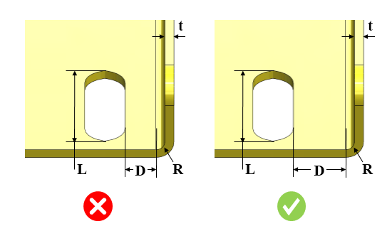
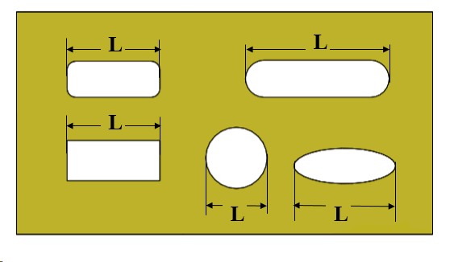
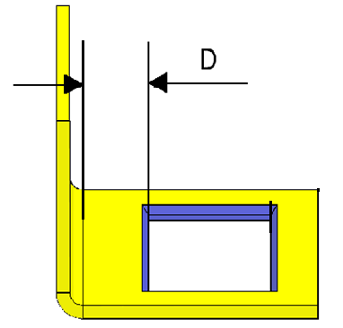

カットアウトから曲げまでの最小距離と板厚との比率は、ユーザーが指定した値以上である必要があります。
曲げに近すぎるカットアウトは、曲げ加工中に変形します。カットアウトのエッジから内側曲げRの開始位置までの距離が、板厚の少なくとも2倍であれば、変形は最小限になります。
一般的な指針として、カットアウトから内側曲げRの開始位置までの最小距離は、板厚の少なくとも2倍以上であることが推奨されます。
カットアウトからパーツの曲げまでの最小距離と板厚との比率（カットアウト長さに対して）は、ユーザーが指定した値以上である必要があります。

ここでは、
D = カットアウトから曲げまでの距離
t = 板厚
L = カットアウト長さ
R = 曲げ半径
注記：
カットアウト長さに基づく推奨に対して、以下の形状がサポートされています：

ユーザーは、Ctrl + I コマンドを使用して、Excelシートテンプレート内にある一括データをインポートすることができます。
標準テンプレート形式：
L1 |
L2 |
D/t |
0 |
1.0 |
2.0 |
1.0 |
2.0 |
2.5 |
2.0 |
|
3.0 |
ここでは、
L1 = カットアウト長さ = 最小（超過）
L2 = カットアウト長さ = 最大（～まで、または含む）
標準テンプレート形式：
L1/t |
L2/t |
D/t |
0 |
20.0 |
2.5 |
20.0 |
|
4.0 |
ここでは、
L1/t および L2/t = カットアウト長さと板厚の比率の範囲
注記：
曲げと重なっている／干渉しているカットアウトは、ルール解析の対象となり、距離0として違反（失敗）を表示します。
このルールは、正方形・長方形・オブロングのカットアウトが曲げエッジに対して直交し、かつ交差している場合は考慮しません。
面取り付きのカットアウトにも対応しています。
